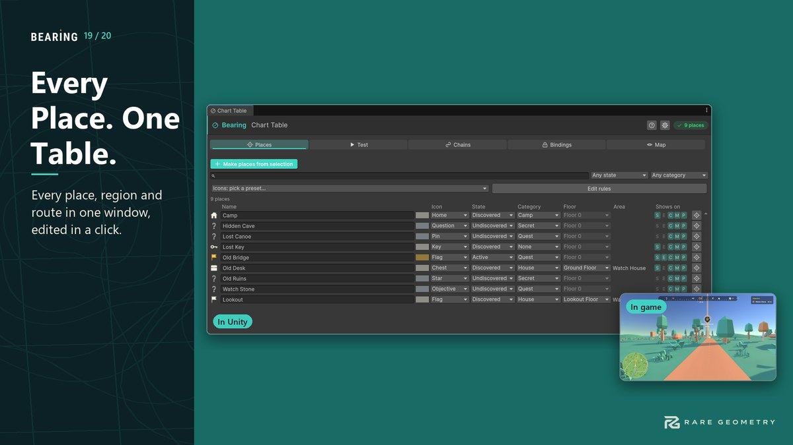

Chart Table: author and test your places
Tools > Bearing > Chart Table is where you author every place in your level and test it while the HUD runs. Every waypoint is a place with a state, and one state change updates every display in the same frame: the marker on screen, the edge arrow, the compass bar, the minimap, the full-screen map and its legend.


Try it first in the demo: Tools > Bearing > Open Demo > Chart Table.
Place states #
| State | What players see (the defaults) |
|---|---|
| Undiscovered | Not found yet: a faint question mark on the compass, minimap and map; no screen marker or edge arrow; no name. |
| Discovered | Found: shown normally everywhere. |
| Active | The current objective: the objective colour and a pulse, everywhere, shown first when the screen is crowded. |
| Completed | Done: off the screen and compass, dimmed with a check mark on the minimap and map. |
| Hidden | Drawn nowhere, but still listed in the Chart Table. |
Each state's look is a setting in the HUD's style (States section; also behind the Chart Table's gear): which displays show it, question mark, colour (normal, objective or your own), how see-through, check mark, pulse and the legend word. Change it once and every place in that state follows.
The tabs #
| Tab | What it does |
|---|---|
| Places | Every place in the open scenes, sorted by floor and name. Search by name, category or object; filter by state and category. Edit the name, icon, state, category and floor right in the list. Click a row to select and frame it. Make places from selection turns every selected object into a place in one step (one Undo). |
| Test | Step the picked place through its states (or press Next state) and watch Every display, live: for each display it says Shown or why not. Works in Play Mode and, with the HUD's editor preview on, while you edit. |
| Chains | An objective chain is places in order: the first is the objective; reaching it completes it and moves the objective to the next. New chain starts from the places you selected, in the order you selected them. Drag steps to reorder, then Wire. Start and Advance try it. |
| Bindings | Make a place follow something in your game: another product's object state (a door that is Locked or Open), an Animator bool, or a GameObject being on. Or call the place's MarkDiscovered, MarkActive, MarkCompleted, MarkHidden or MarkUndiscovered from any UnityEvent. |
| Map | The calibration wizard: line a map picture up with the world from two spots picked in the Scene view and on the picture. It shows the error in metres; Apply can be undone. A third spot checks the result. |
The gear at the top right holds the settings: the HUD the Chart Table tests, its editor preview, and the look of each state and of the discovery banner. Help (the question mark) explains the open tab.
Discovery #
An undiscovered place becomes discovered by one of (Waypoint > Discovery and fast travel):
- When the player is near (Discover Within, in metres), the default;
- When the player can see it: on screen, within the distance, and not behind a wall;
- When its region is discovered (pick the Waypoint Map Region);
- Only when told: from code, a UnityEvent or the Chart Table.
Reaching a place always discovers it. On discovery the discovery banner shows "New location discovered" and the name. Set it in the style's Banner section: words and name, name only, icon only, or none; top, upper third, centre or bottom; how long; regions too. Banners wait in one queue, so two discoveries never overlap. Untick Discovery Banner on a place to keep it quiet.
Fast travel #
Tick Fast-travel point on a place. Once discovered it carries a small arrow badge on the full-screen map; clicking it
(or the gamepad's place button on it) raises On Fast Travel Requested on the place, Waypoint.FastTravelRequested,
WaypointHud.FastTravelRequested and WaypointRegistry.AnyFastTravelRequested. Your game does the move (and any fade,
cost or scene load). The demo's SampleFastTravel shows the simplest version.
Saving #
Place states are saved with everything else Bearing saves (bearing.waypoints, format version 2): with
SaveService.Save("slot") (one JSON file per slot, or your save product when one is installed) or your own save system
through WaypointSave.Capture() and Restore(text). Each place is found again by its Stable Id.
From code #
using RareGeometry.Bearing;
using RareGeometry.Core;
place.State = PoiState.Active; // every display updates
place.StateChanged += (w, from, to) => { }; // or WaypointRegistry.AnyStateChanged
place.Discover(); // only if undiscovered
chain.Begin(); // a WaypointChain: first step Active
Other products read Bearing's places through the shared IPoiSource (WaypointPoiSource): id, name, position, state,
category and icon.
As the player #
In Play Mode the Test tab's As the player row does what a player would do with the picked place: show it on the map, track it, travel there (the permissions, the lock and your checks all apply), pin it, search for it and discover it. The line under it says whether travel is open and why not, and what the last refused action was.
Narrow windows #
The Places list fits any width. The name always gets the spare room; as the window narrows, Floor hides first, then Category, then the icon colour and Icon columns. Point at a row to see what the hidden columns hold (and the full name). The headings sit exactly over their columns. Below about 470 points the search and the two filters stack, each full width. The tabs go from one row to an even grid (3 and 2, in the same columns), then to icons only, then to a dropdown.
Category is picked, not typed: the dropdown lists the categories already used, None, and New category.... Colour is the icon colour: faded means the style's colour (the default); pick one to give the place its own; right-click for Use the style's colour. The Waypoint inspector has the same category dropdown and a Use style colour switch.